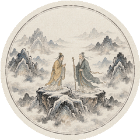
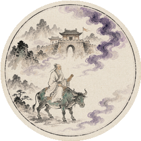
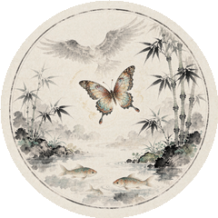
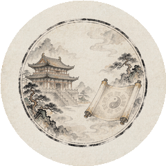
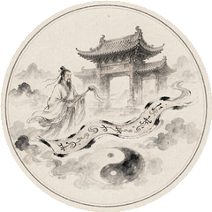
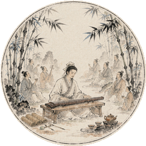
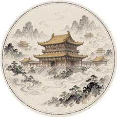
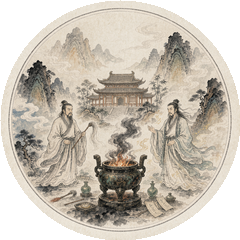
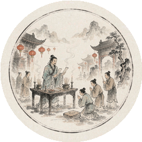
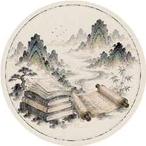

道 之 源
追溯道家思想的起源与发展，从黄帝、老庄到后世传承
道家思想，源远流长，是中华文明最重要的精神源头之一。其思想渊源可上溯至上古黄帝时期，「黄老之学」即以黄帝、老子并称，代表了道家思想的最初形态。
春秋末年，老子著《道德经》（帛书本作《德道经》），以五千言立道之本。战国时期，庄子承其学而宏其说，《庄子》三十三篇，汪洋恣肆，寓言说理，将道家思想推向新的高峰。
此后，道家思想历经秦汉黄老、魏晋玄学、隋唐重玄、宋元内丹等阶段的传承与演变，与儒家、释家互相交融，共同构成了中华文化的精神大厦，深刻影响了中国人的思维方式、生活方式与审美趣味。
真和盛以「观天道，明人事，致中和」为旨归，致力于道家文化的正本清源与当代传承——从帛书《德道经》的逐章解读，到周易六十四卦的逐卦研习，再到四柱八字的系统入门，让千年智慧重新照进现代生活。

黄帝问道于广成子，得「至道」之精。此为道家修身养性、清净长生思想的最早源头。

老子著《道德经》五千言，阐述「道法自然」「无为而治」等核心思想，为道家学派奠基。

庄子承老学而光大之，著《庄子》三十三篇，以鲲鹏、梦蝶等寓言阐发逍遥齐物之旨。

黄老之学融合道法，主张清静无为、与民休息，成为汉初治国理念，成就「文景之治」。

张道陵于鹤鸣山创立五斗米道（正一盟威道），道家思想由哲学走向宗教，道团组织初具规模。

何晏、王弼以道解儒，竹林七贤纵情山水、清谈玄理，老庄之学风靡士林，深入士人精神。

李唐尊老子为圣祖，道教几成国教；宫观林立，教理、斋醮、炼养之术于此大备。

正一、全真两脉并立，王重阳、丘处机弘传全真，内丹学体系走向成熟，道教深入民间。

龙门派中兴，道教斋醮科仪融入岁时节令与百姓日常生活，与民间信仰深度融合。

道家思想与现代环保、身心健康理念相契合，在管理、心理、养生等领域焕发新生，并走向世界。
「上德不德，是以有德；下德不失德，是以无德。」
—— 老子 · 《德道经》